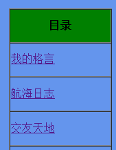

第五天笔记
一些属性：
- word-spacing 单词间距，适用于英文
- letter-spacing 字母间距，适用于英文和中文
- 1em = 12px
- vertical-align 垂直方向位置
举个栗子：
img.wf1{
vertical-align: top; /*行内对其方式*/
}
img.wf2{
vertical-align: bottom; /*行内对其方式*/
}
- text-decoretion 文本装饰
- overline 上划线
- line-through 删除线
- unline 下划线
- 关于超链接的状态设置
- a:link{} 为点击时
- a:visited{} 点击之后
- a:hover{} 鼠标滑过时
- a:active{} 鼠标点击时
- float 文字环绕
- clear 清除文字环绕
- position 定位 absolut（绝对定位）/relative（相对定位）
一些事件：
- onmouseover 鼠标经过
- onmouseout 鼠标移除
标签：
<span> 用作提醒
关于margin-right无效的一些讨论：
- 浏览器默认从左往右渲染元素，在没有超出父容器的宽度的前提下 如果子容器的宽度能够被容纳 设置margin-right是没有用的
- #right{width: 400px;
height: 300px;
margin-right:100px;
float:right}
你再看有没有效, 使用向右浮动
- span{
position:absolute;
border:1px solid red;
right:0;
}
关于table的border边框设置的一些经验：
- 直接在table标签里面直接写border设置的是边框的宽度
- 在style样式表中写border可以写三个值：线宽，线型，线色
- 一般的这样设置的表格每个单元格都有一个独立的边框，要想达到常用表格的效果
需要在table里面设置cellspacing="0"属性，使得单元格的间距为0即可达到效果
这里看图：
未设置单元格间距

设置单元格间距为0
一些单词：
- inherit：继承
- remote：远程
- master： 主干
- hover：悬停
- vertical：垂直